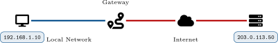
Figure: Diagram supporting the preceding content.
Review: From Layer 2 to Layer 3
The Key Difference
MAC = local delivery (within your network) IP = end-to-end delivery (across the internet)
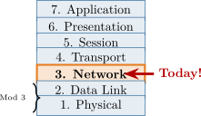
Figure: Diagram supporting the preceding content.
After completing this module, you will be able to:
This section introduces IPv4 packet structure and the relationship between Layer 2 and Layer 3 addressing during local delivery and routing.
Key fields:
TTL Prevents Loops
Each router decrements TTL by 1. When TTL reaches 0, the packet is discarded—prevents infinite loops!
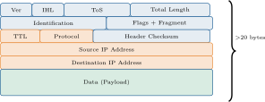
Figure: Diagram supporting the preceding content.
MAC Address (Layer 2)
IP Address (Layer 3)
Mailing Analogy
IP address = Full mailing address (123 Main St, Springfield, USA)
MAC address = Apartment number (Apt 4B—only meaningful inside the building)
Figure: Diagram supporting the preceding content.
How Routers Use Both Addresses
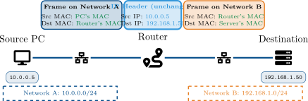
Figure: Diagram supporting the preceding content.
Key Insight
IP addresses stay the same from source to destination. MAC addresses change at every hop—the router creates a new frame for each network segment.
Address Resolution Protocol (ARP)
Security Note
ARP has no authentication. ARP spoofing attacks send fake replies to redirect traffic!
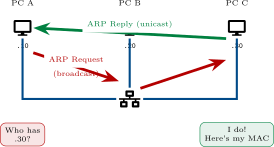
Figure: Diagram supporting the preceding content.
Common ARP Commands
arp -a — Display all entries arp -d [IP] — Delete an entry arp -s [IP] [MAC] — Add static entry
Sample ARP Table Output
| IP Address | MAC Address |
| 192.168.1.1 | 00:1a:2b:3c:4d:01 |
| 192.168.1.25 | 00:1a:2b:3c:4d:25 |
| 192.168.1.50 | 00:1a:2b:3c:4d:50 |
Troubleshooting Tip
Empty ARP table? No local communication is happening—check Layer 1 and 2 first!
Unicast, Broadcast, Multicast, and Anycast
Figure: Diagram supporting the preceding content.
Common Uses
Unicast: Most traffic (web, email) Broadcast: ARP, DHCP discovery
Common Uses
Multicast: Video streaming, routing updates Anycast: DNS, CDNs (find closest server)
Case Study: Homer’s Home Network Mystery
Case Study: Homer’s Home Network Mystery
Homer Simpson just set up a new PC in his home office. He runs some
tests:
Homer runs arp -a and sees an empty ARP table.
Review Questions
What does an empty ARP table suggest about network communication?
What Layer 1 or Layer 2 issue might cause this?
What should Homer check first?
Case Study Solution: Homer’s Home Network Mystery
Solution: Homer’s Home Network Mystery
Empty ARP table means no successful local communication—ARP requests aren’t being answered (or sent).
Likely Layer 1/2 causes:
Homer should check (in order):
Key Lesson
If the ARP table is empty, the problem is almost always Layer 1 or Layer 2—not the IP configuration. Check physical connectivity first!
This section covers IPv4 addressing structure, subnet masks, and host range calculations used in practical network design.
Why 0–255?
Each octet is 8 bits. 28 = 256 possible values (0 through 255).
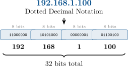
Figure: Diagram supporting the preceding content.
Every IP address has two parts:
Analogy
Think of a phone number: area code (network) + local number (host).
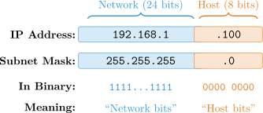
Figure: Diagram supporting the preceding content.
| Subnet Mask | CIDR | Total Addresses | Usable Hosts |
| 255.0.0.0 | /8 | 16,777,216 | 16,777,214 |
| 255.255.0.0 | /16 | 65,536 | 65,534 |
| 255.255.255.0 | /24 | 256 | 254 |
| 255.255.255.128 | /25 | 128 | 126 |
| 255.255.255.192 | /26 | 64 | 62 |
| 255.255.255.224 | /27 | 32 | 30 |
| 255.255.255.240 | /28 | 16 | 14 |
| 255.255.255.248 | /29 | 8 | 6 |
| 255.255.255.252 | /30 | 4 | 2 |
Why “Usable” Is Less
Two addresses are always reserved:
Formula
Usable hosts = 2n −2
where n = number of host bits
Example: /24 has 8 host bits 28 −2 = 256 −2 = 254 hosts
Calculating Host Address Ranges
Given Information
Step-by-Step Calculation
1. Network Address: 192.168.1.0 – host bits all 0
2. First Usable Host: 192.168.1.1 – network + 1
3. Last Usable Host: 192.168.1.254 – broadcast - 1
4. Broadcast Address: 192.168.1.255 – host bits all 1
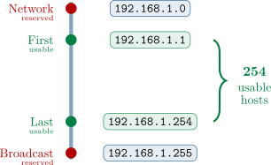
Figure: Diagram supporting the preceding content.
Common Mistake
If the gateway is on a different subnet than the host, the host cannot reach it—and cannot reach anything outside the local network!
Figure: Diagram supporting the preceding content.
PC Configuration
IP: 192.168.1.100 Mask: 255.255.255.0 Gateway: 192.168.1.1
Case Study: Moe’s Tavern Network Problem
Case Study: Moe’s Tavern Network Problem
Moe is setting up a new point-of-sale (POS) system at the tavern to track Duff
Beer sales. The system is configured as follows:
| Setting | Value |
| IP Address | 192.168.10.50 |
| Subnet Mask | 255.255.255.0 |
| Default Gateway | 192.168.20.1 |
Barney’s laptop (192.168.10.25) can ping the POS system just fine. However, the POS system cannot reach the internet or the beer distributor’s ordering website.
Review Questions
What’s wrong with this configuration?
Why can Barney reach the POS but the POS can’t reach the internet?
What should the gateway address be?
Case Study Solution: Moe’s Tavern Network Problem
Solution: Moe’s Tavern Network Problem
The gateway 192.168.20.1 is on a different subnet than the POS system (192.168.10.x).
Why Barney can reach POS but POS can’t reach internet:
Gateway should be on the same subnet, such as 192.168.10.1.
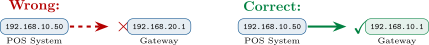
Figure: Diagram supporting the preceding content.
Key Lesson
The default gateway must be on the same subnet as the host. This is one of the most common misconfigurations!
Address planning evolved from classful limits to CIDR and VLSM for efficient allocation and scalable route summarization.
| Class | First Octet | Default Mask | Networks | Hosts/Network |
| A | 1–126 | 255.0.0.0 (/8) | 126 | 16,777,214 |
| B | 128–191 | 255.255.0.0 (/16) | 16,384 | 65,534 |
| C | 192–223 | 255.255.255.0 (/24) | 2,097,152 | 254 |
| D | 224–239 | (Multicast—not for hosts)
| ||
| E | 240–255 | (Experimental—reserved)
| ||
The Problem
Very wasteful! A company needing 300 hosts had to get a Class B (65,534 addresses).
The Solution
CIDR (Classless Inter-Domain Routing) replaced classes with flexible prefix lengths.
Public IP Addresses
Private IP Addresses
Private Address Ranges
| Range | CIDR |
| 10.0.0.0 – 10.255.255.255 | /8 |
| 172.16.0.0 – 172.31.255.255 | /12 |
| 192.168.0.0 – 192.168.255.255 | /16 |
NAT Makes It Work
NAT (Network Address Translation) converts private addresses to public at the router—this is how your home network reaches the internet!
| Address Range | Name | Purpose |
| 127.0.0.0/8 | Loopback | Test local TCP/IP stack |
| 169.254.0.0/16 | APIPA / Link-Local | Auto-config when DHCP fails |
| 0.0.0.0 | “This network” | Default route or unknown |
| 255.255.255.255 | Limited Broadcast | Broadcast to local segment |
Loopback (127.0.0.1)
APIPA (169.254.x.x)
If you see this address, the device couldn’t get a DHCP address!
Troubleshoot:
CIDR: Classless Inter-Domain Routing
Reading CIDR Notation
192.168.1.0/24
| CIDR | Addresses | Usable Hosts |
| /24 | 256 | 254 |
| /25 | 128 | 126 |
| /26 | 64 | 62 |
| /27 | 32 | 30 |
| /28 | 16 | 14 |
| /29 | 8 | 6 |
| /30 | 4 | 2 |
Quick Math
Addresses = 2(32−prefix)
Example: /26 2(32−26) = 26 = 64 addresses
Variable Length Subnet Masks (VLSM)
Example Requirement
Company needs: → Sales: 100 hosts → Engineering: 50 hosts → Management: 25 hosts → Point-to-point link: 2 hosts
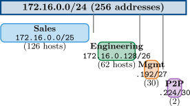
Figure: Diagram supporting the preceding content.
Result
Used 220 addresses for 177 hosts. Without VLSM: would need 512+ addresses!
Case Study: Springfield Elementary Network Design
Case Study: Springfield Elementary Network Design
Principal Skinner needs to design the school network with three segments. The
district IT department has assigned him 172.16.50.0/24 (256 addresses).
| Segment | Devices Needed | Description |
| Computer Lab | 28 | Student workstations |
| Admin Office | 12 | Staff computers, printers |
| Teacher’s Lounge | 6 | Laptops, smart TV |
Skinner wants to use VLSM to efficiently allocate addresses without waste.
Review Questions
What is the smallest subnet size that can fit 28 hosts?
List appropriate subnet assignments for each segment.
How many addresses will be “wasted” (unused or reserved)?
Case Study Solution: Springfield Elementary Network Design
Solution: Springfield Elementary Network Design
28 hosts needs at least 30 usable addresses → /27 (32 addresses, 30 usable).
Subnet assignments (largest first):
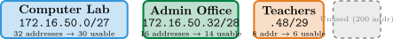
Figure: Diagram supporting the preceding content.
Address Accounting
Used: 32 + 16 + 8 = 56 addresses For: 28 + 12 + 6 = 46 devices Reserved (net/bcast): 6 addresses “Wasted”: 4 addresses (headroom)
Key Lesson
VLSM lets you right-size subnets. Always assign largest first, then work down. Leave room for growth!
This section reviews host-side IP tools and a systematic approach to connectivity testing and troubleshooting.
Common Commands
ipconfig Shows IP, mask, gateway
ipconfig /all Adds MAC, DHCP server, DNS
ipconfig /release Release current DHCP lease
ipconfig /renew Request new DHCP lease
ipconfig /flushdns Clear the DNS cache
Sample Output: ipconfig /all
Ethernet adapter Local Area Connection:
| Description | Intel Ethernet |
| Physical Address | 00-1A-2B-3C-4D-5E |
| DHCP Enabled | Yes |
| IPv4 Address | 192.168.1.100 |
| Subnet Mask | 255.255.255.0 |
| Default Gateway | 192.168.1.1 |
| DHCP Server | 192.168.1.1 |
| DNS Servers | 8.8.8.8 |
Troubleshooting Tip
See 169.254.x.x? DHCP failed! See 0.0.0.0? No IP assigned at all.
Legacy: ifconfig
ifconfig Show all interface configuration
ifconfig eth0 Show specific interface
ifconfig eth0 down Disable an interface
ifconfig eth0 up Enable an interface
Note
ifconfig is deprecated on many modern Linux distributions. Use ip instead!
Modern: ip command
ip addr (or ip a) Show IP addresses
ip link Show interface status (up/down)
ip route Show routing table and gateway
ip neigh Show ARP cache (neighbors)
Sample: ip addr
2: eth0: <UP,BROADCAST> inet 192.168.1.50/24 link/ether 00:1a:2b:3c:4d:5e
Common Commands
arp -a Display entire ARP cache
arp -a 192.168.1.1 Display entry for specific IP
arp -d 192.168.1.1 Delete an entry from cache
arp -s 192.168.1.1 00-1a-2b-3c-4d-5e Add a static entry manually
When to Use
Sample Output: arp -a
Interface: 192.168.1.100
| Internet Addr | Physical Addr | Type |
| 192.168.1.1 | 00-1a-2b-3c-4d-01 | dynamic |
| 192.168.1.25 | 00-1a-2b-3c-4d-25 | dynamic |
| 192.168.1.50 | 00-1a-2b-3c-4d-50 | dynamic |
| 192.168.1.254 | 00-1a-2b-3c-4d-fe | static |
Dynamic vs Static
Dynamic: Learned via ARP, expires after timeout
Static: Manually configured, never expires
ping: The Essential Connectivity Test
Common Options
ping 192.168.1.1 Basic connectivity test
ping -t 192.168.1.1 Continuous ping – Windows
ping -c 5 192.168.1.1 Send 5 pings – Linux/Mac
Sample Output
Pinging 192.168.1.1 with 32 bytes of data:
Reply from 192.168.1.1: bytes=32 time=2ms TTL=64 Reply from 192.168.1.1: bytes=32 time=1ms TTL=64 Reply from 192.168.1.1: bytes=32 time=1ms TTL=64 Reply from 192.168.1.1: bytes=32 time=2ms TTL=64
Common Results
Reply – Success! Host is reachable
Request timed out – No response received
Destination unreachable – Routing problem
Ping Troubleshooting Methodology
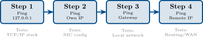
Figure: Diagram supporting the preceding content.
If Step 1 Fails
TCP/IP stack is broken. Reinstall network drivers or reset TCP/IP stack.
If Step 2 Fails
NIC is not configured properly. Check IP settings, cable, NIC driver.
If Step 3 Fails
Local network issue. Check cable, switch port, gateway address, ARP table.
If Step 4 Fails
Routing or remote issue. Check gateway config, ISP connection, firewall.
The final section introduces IPv6 structure, address types, and migration approaches from IPv4 environments.
Why IPv6? The Problem with IPv4
IPv6 Address Space
2128 = 340 undecillion addresses
That’s 340,282,366,920,938,463,463,374,607,431,768,211,456 addresses!
IPv6 Benefits
Perspective
IPv6 could assign a unique address to every atom on Earth’s surface... and still have addresses left over!
Full Format
2001:0db8:85a3:0000:0000:8a2e:0370:7334
Simplification Rules
Rule 1: Drop leading zeros in each group
2001:0db8:85a3:0000:0000:8a2e:0370:7334
↓
2001:db8:85a3:0:0:8a2e:370:7334
Rule 2: Replace ONE set of consecutive zero groups with ::
2001:db8:85a3:0:0:8a2e:370:7334
↓
2001:db8:85a3::8a2e:370:7334
Important: Use :: Only Once!
You can only use :: once per address. Using it twice would make the address ambiguous – you wouldn’t know how many zero groups each :: represents.
IPv6 Network Prefixes and Address Types
Figure: Diagram supporting the preceding content.
Common IPv6 Address Types
| Type | Prefix |
| Global Unicast | 2000::/3 |
| Link-Local | fe80::/10 |
| Unique Local | fc00::/7 |
| Multicast | ff00::/8 |
| Loopback | ::1/128 |
| Unspecified | ::/128 |
Example Address
2001:db8:1234:5678::1/64
Prefix: 2001:db8:1234:5678 Interface ID: ::1
Global Unicast – GUA
Link-Local – fe80::
Always Present
Every IPv6 interface has a link-local address, even without DHCP or manual config!
Unique Local – fc00::/7
Multicast – ff00::/8
Loopback
::1 is the IPv6 loopback – equivalent to IPv4’s 127.0.0.1
Dual Stack
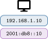
Figure: Diagram supporting the preceding content.
Tunneling
Translation – NAT64
Recommendation
Dual stack is the preferred transition method. Run both protocols until IPv4 can be safely retired. Most modern operating systems support dual stack by default.
Key Concepts:
Troubleshooting & IPv6:
This module covered IPv4 and IPv6 addressing, subnetting with CIDR and VLSM, address resolution with ARP, and troubleshooting tools. You learned to calculate subnet masks, plan IP address schemes, and diagnose connectivity problems systematically. In the next module, we’ll explore routing protocols and how packets travel between networks.